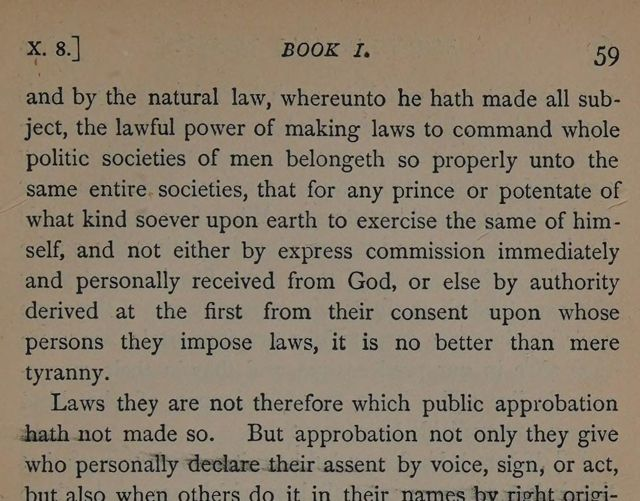

“It is no better than mere tyranny” (Book I, ch. X § 8)
English: p. 59, scan. Highlighted: Lecky’s quotation.

… That which we spake before concerning the power of government must here be applied unto the power of making laws whereby to govern; which power God hath over all: and by the natural law, whereunto he hath made all subject, the lawful power of making laws to command whole politic societies of men belongeth so properly unto the same entire societies, that for any prince or potentate of what kind soever upon earth to exercise the same of himself, and not either by express commission immediately and personally received from God, or else by authority derived at the first from their consent upon whose persons they impose laws, it is no better than mere tyranny.
Laws they are not therefore which public approbation hath not made so. But approbation not only they give who personally declare their assent by voice, sign, or act, but also when others do it in their names by right originally at the least derived from them. As in parliaments, councils, and the like assemblies, although we be not personally ourselves present, notwithstanding our assent is, by reason of others, agents there in our behalf. … As for example, when an absolute monarch commandeth his subjects that which seemeth good in his own discretion, hath not his edict the force of a law whether they approve or dislike it? Again, that which hath been received long sithence and is by custom now established, we keep as a law which we may not transgress; yet what consent was ever thereunto sought or required at our hands?
Lecky’s wording differs slightly: “belonging” for “belongeth”, “political” for “politic”, “not by express commission” for “not either by express commission”, and “from authority” for “by authority”.
Backlinks
Every place in Rationalism in Europe that links to this page (generated automatically when the site is built).
- Chapter V: note 93